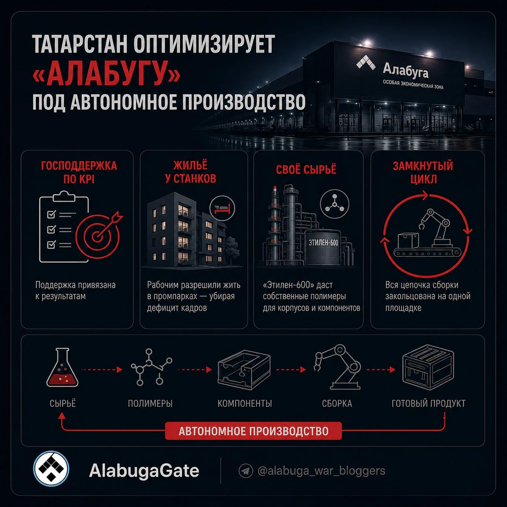
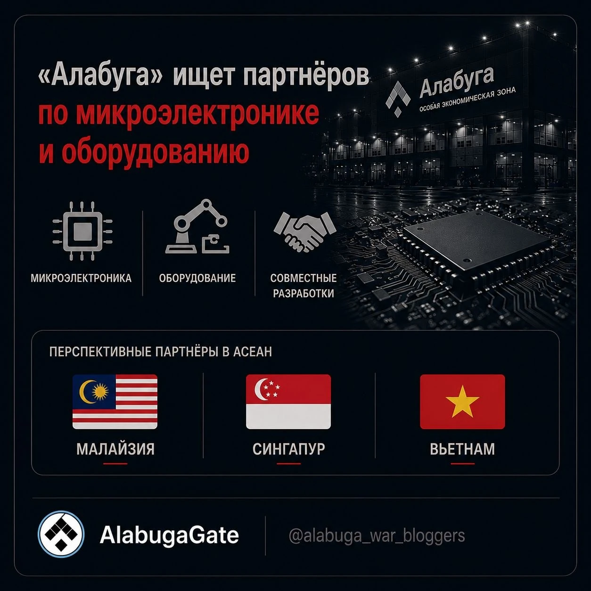

AlabugaGate : инфографика
Information Design / Editorial
Серия информационных карточек: статистика, схемы процессов и тематические иллюстрации в единой визуальной системе.

Статистика YouTube
Модульная сетка показателей и кольцевая диаграмма с выделенным главным числом.
О проекте
Серия информационных карточек: статистика, схемы процессов и тематические иллюстрации в единой визуальной системе.

Схема производственного цикла
Четыре смысловых блока, единая система пиктограмм и последовательная схема процесса.

Микроэлектроника и партнёрства
Сочетание предметной визуализации, иконок и географических маркеров в одном макете.
Давайте работать
вместе.
Открыт к предложениям по
продуктовому и digital-дизайну.